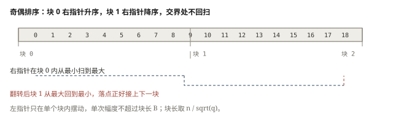

莫队：离线区间查询的移动次序
莫队把一组区间查询按特殊顺序重排，使左右指针的总移动量从 $O(nq)$ 降到 $O(n\sqrt q)$。它不改变维护方式，只改变访问顺序；代价是必须离线，且维护的信息要能在端点增删时 $O(1)$ 更新。
一、分块与排序
把左端点按块划分，块内按右端点排序：左指针的移动被限制在块长以内，右指针在每个块内单调移动一次。块长取 $n/\sqrt q$ 时总复杂度达到 $O(n\sqrt q)$。
struct MoQuery { int l, r, id; };
vector<int> mo_distinct(const vector<int> &a, vector<MoQuery> qs) {
int n = (int)a.size();
int B = max(1, (int)(n / max(1.0, sqrt((double)qs.size()))));
sort(qs.begin(), qs.end(), [&](const MoQuery &x, const MoQuery &y) {
int bx = x.l / B, by = y.l / B;
if (bx != by) return bx < by;
return (bx & 1) ? x.r > y.r : x.r < y.r;
});
int maxv = *max_element(a.begin(), a.end());
vector<int> cnt(maxv + 1, 0), ans(qs.size());
int cur = 0, L = 0, R = -1;
for (auto &q : qs) {
while (R < q.r) if (++cnt[a[++R]] == 1) ++cur;
while (L > q.l) if (++cnt[a[--L]] == 1) ++cur;
while (R > q.r) if (--cnt[a[R--]] == 0) --cur;
while (L < q.l) if (--cnt[a[L++]] == 0) --cur;
ans[q.id] = cur;
}
return ans;
}四个 while 的次序可以任意，只要区间最终一致；但括号省略的写法依赖"自增自减返回新值"的语义，读代码时要看清是先移动指针还是先访问元素。初始 L = 0、R = -1 表示当前区间为空，第一次扩展时 ++R 落在 $0$，不会越界。
(bx & 1) ? x.r > y.r : x.r < y.r 是奇偶排序：相邻块一个升序、一个降序，使右指针在块交界处不必从最右端回到最左端。这一步通常能省掉约一半的右指针移动，是可选项，但代价为零。

二、什么可以被维护
莫队要求"加一个元素"和"删一个元素"都能 $O(1)$ 更新当前答案，并且答案可由当前窗口直接读出。典型的可维护量有：不同数值的个数、出现次数为 $k$ 的元素个数、区间和、区间最大频率（配合值域分块，$O(\sqrt n)$ 调整）。
反例是"区间内的逆序对数量"：加入一个元素需要查询它前面有多少个比它小的数，普通莫队做不到 $O(1)$，要换成带树状数组的 $O(\log n)$ 调整，此时总复杂度变成 $O(n\sqrt q\log n)$，是否可接受取决于数据。
只删不加的问题（例如"删除后仍保持某性质"）可以用回滚莫队：块内只扩展右端点，左端点小范围暴力后回滚，避免删除操作。实现上依赖"可撤销"的状态记录，与可撤销并查集是同一思路。
三、常见变体
- 带修改莫队：三元组 $(l,r,t)$，块长取 $n^{2/3}$，复杂度 $O(n^{5/3})$，适合"单点修改 + 区间查询"的离线题。
- 树上莫队：对树做欧拉序，把路径查询转成区间查询，注意 LCA 的单独处理与出现次数为奇偶的点集。
- 二次离线：把"移动指针时产生的大量单点查询"再离线一遍，用更便宜的结构批量回答，能把 $O(n\sqrt q\log n)$ 优化到 $O(n\sqrt q)$。
- 值域分块配莫队：维护频率数组后，用块内计数找最大频率或第 $k$ 大，单次 $O(\sqrt n)$。
四、易错点
- 块长取常数（如 $316$）而不按 $n/\sqrt q$ 计算，$q$ 与 $n$ 差一个数量级时复杂度明显变差。
- 查询区间按半开写法记录，与代码里的闭区间
[L, R]混用，答案整体偏移一位。 - 排序比较函数里对右端点用了非严格序，
std::sort可能越界。 cnt数组按最大值开，值域是 $10^9$ 时直接爆内存，需要先离散化。- 把
ans按下标写回时用错id（排序后qs的顺序已变，必须用原始编号）。
五、验证
代码在 GCC 16 上以 -std=c++17 -O2 -Wall -Wextra 编译无警告。对拍：随机 $n\le 25$、查询数 $\le 12$，值域 $1..5$，对每个查询用 set 统计不同数值个数作为对照，300 组全部一致。测试特意包含空区间（$l=r$）、重复元素与乱序查询，用来覆盖指针初始状态与四个移动分支。